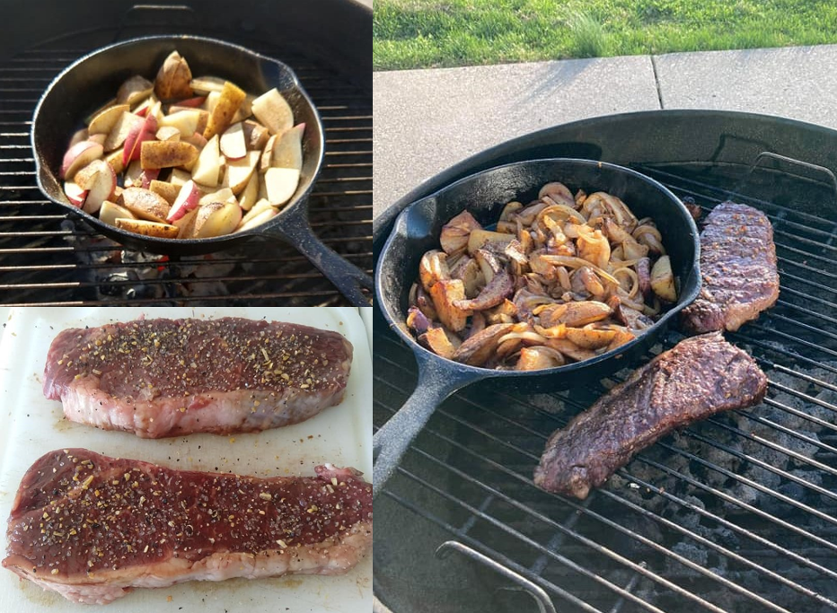
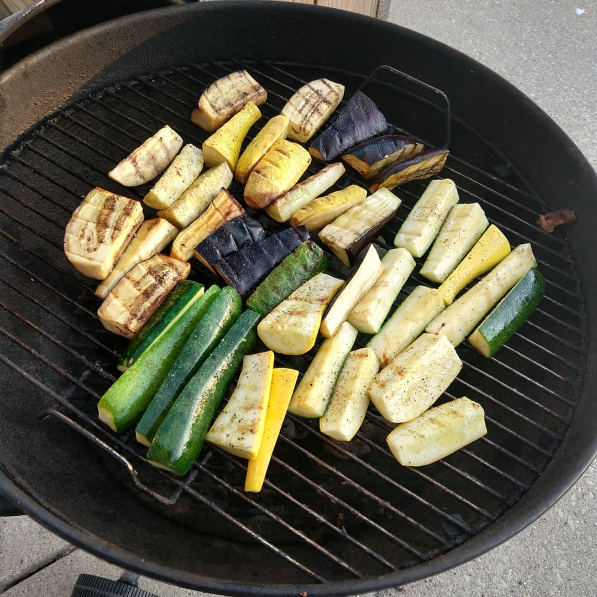
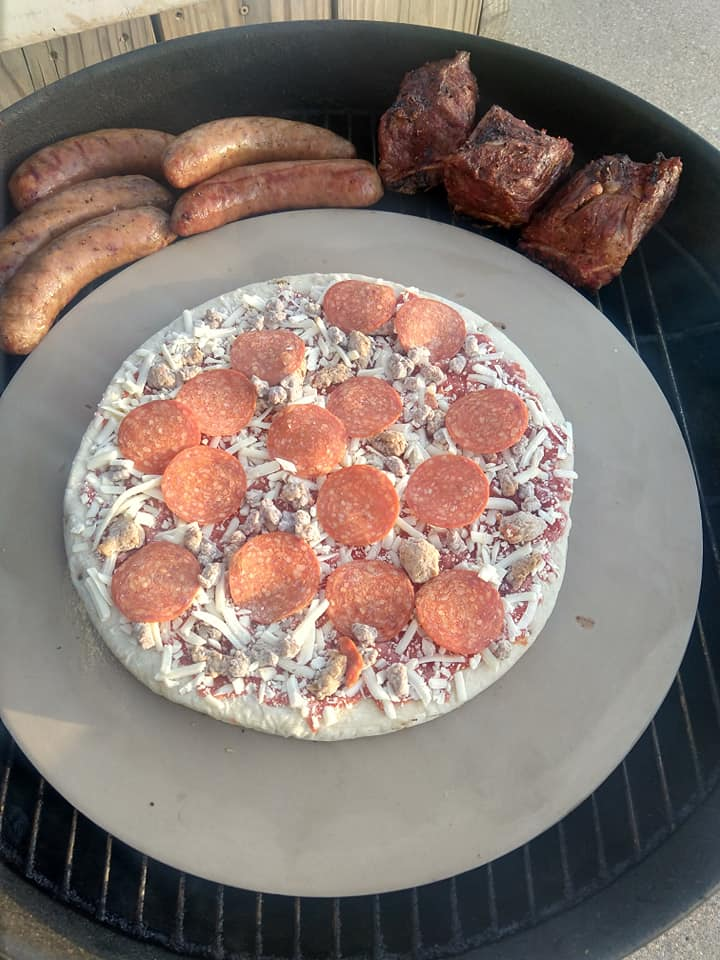
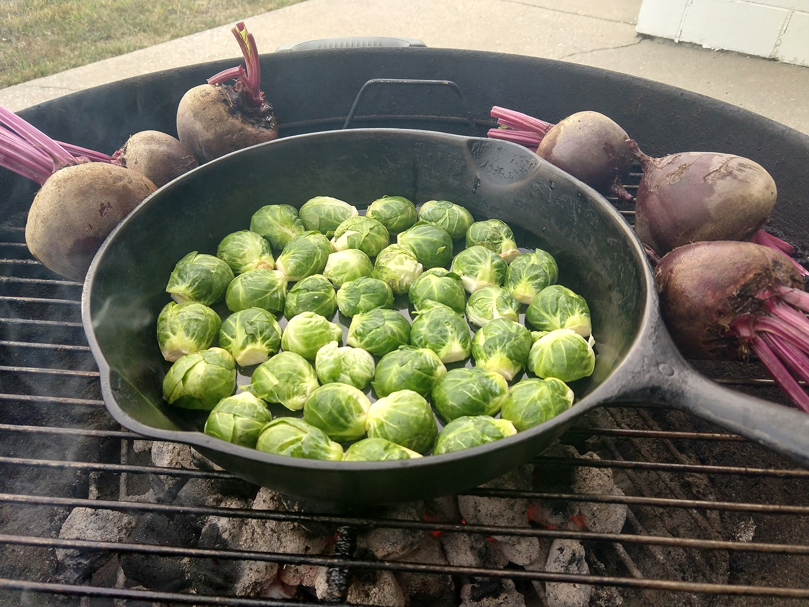
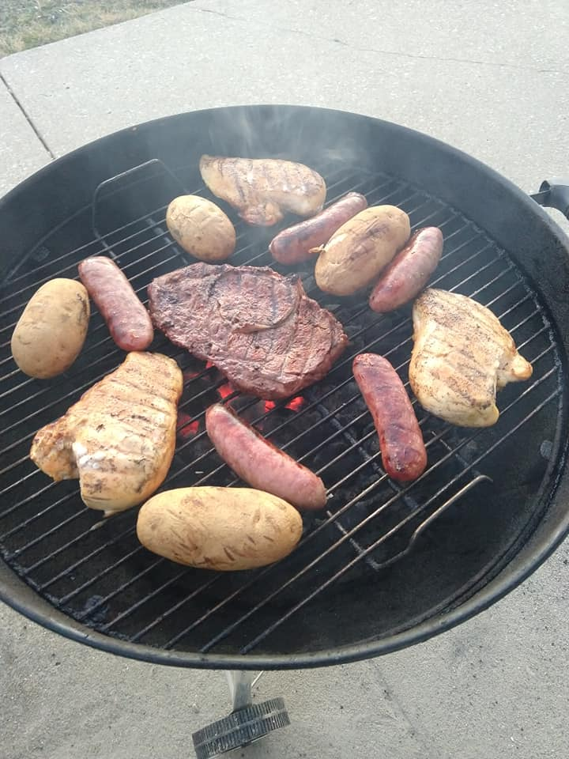
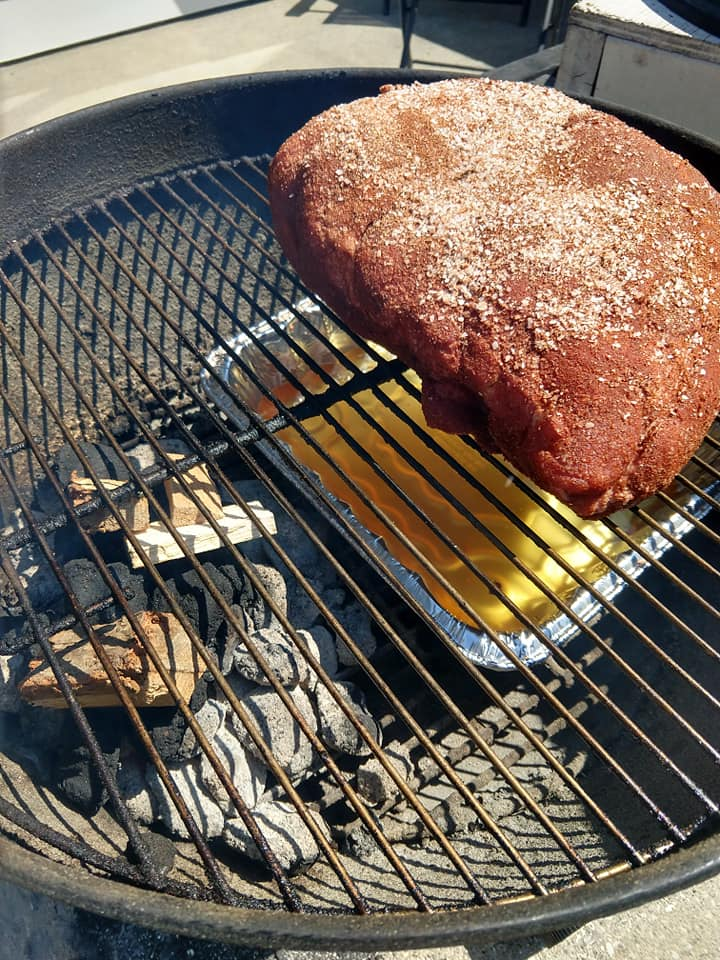
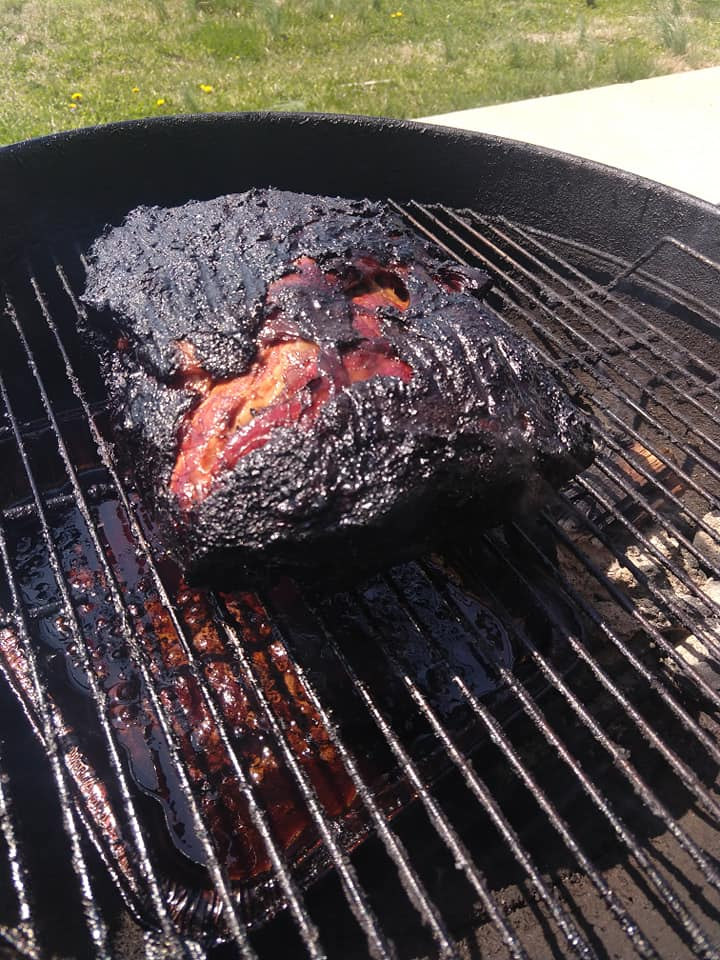
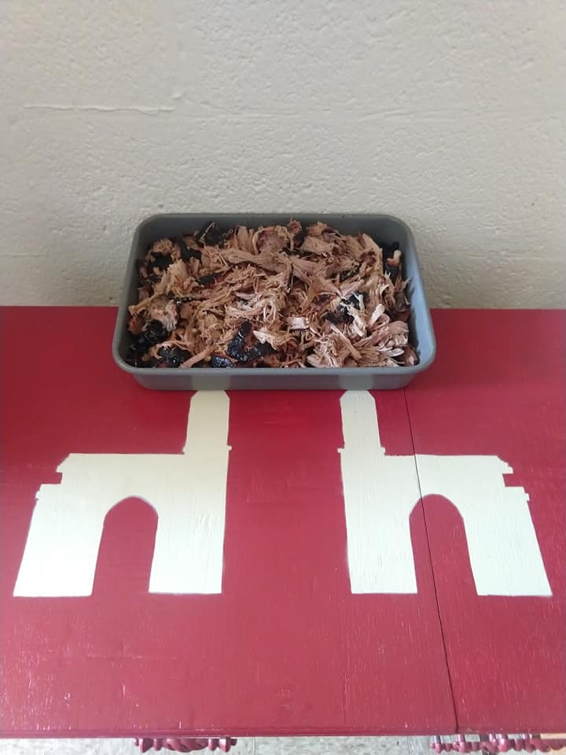
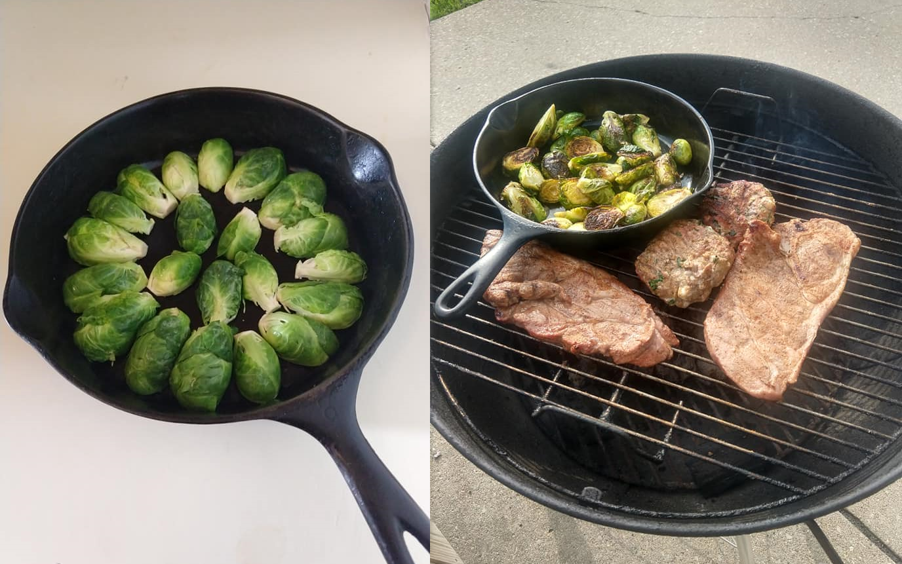

Past Grill Photos
Steak and Potatoes
Strip Steak seasoned with a balsamic vinegar rub and montreal steak seasoning. Fried potatoes and onions in a cast iron pan directly on the grill.

Veggie Assortment
This was my first time grilling veggies like this and they turned out stellar! A bit of olive oil, salt and pepper before tossing on the grill. Then made a balsamic vinegar drizzle for them: olive oil, balsamic vinegar, fresh rosemary, parsley, and sage.

Pizza and Ribs
Invested in a pizza stone which has been working excellent on the grill! Beef ribs and sausage on the side.

Brussel Sprouts and Beets
Cast-iron pan cooked brussel sprouts and grilled beets. The brussel sprouts are one of my favorite things to cook on the grill like this, just a bit of olive oil and try to cook them high heat to put a bit of a crust on them.

Chicken and Potatoes
Took advantage of the abnormally warm weather to grill up brats, chicken breast, brats, and potatoes.

Smoking on a Weber
My first time attempting smoking on my weber grill!

Dry Rub:
- Kosher Salt
- Garlic Powder
- Cinnamon
- Cumin
- Black Pepper
- Cayenne Pepper
I mixed apple cider concentrate with some water and vinegar for the spray. The extra I then added additional water to and used for the pan in the grill to help keep moisture in the meat. I built a bed of charcoal and then as the cook progressed added hickory wood chunks and more charcoal to the bed of coals.
The grill setup was pretty simple, general idea is keep the meat off the main heat. I used an aluminum pan for both an apple cider mix and also to keep the coals off to the opposite side. I periodically added hickory wood chunks and additional charcoal to the grill to keep it going. I started at approximately 1PM, cooked it overnight, and finished it the following day.

After covering and letting it sit for about 45 minutes I pulled it:

Pork Steak, Turkey Burgers, and Brussel Sprouts
Cast-iron pan cooked brussel sprouts, pork steaks and turkey burgers (made with feta and spinach).
